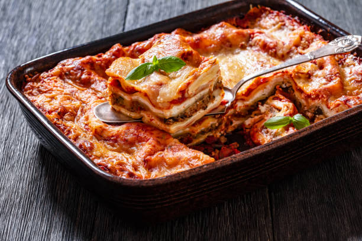

lasagna.html
Lasagna Recipe
Lasagna

Lasagna is a classic Italian dish made with layers of pasta, cheese, meat, and tomato sauce. This recipe will guide you through making a delicious homemade lasagna.
Ingredients
- 12 lasagna noodles
- 1 pound ground beef
- 1 onion, chopped
- 2 cloves garlic, minced
- 1 (24-ounce) jar marinara sauce
- 1 (15-ounce) container ricotta cheese
- 2 cups shredded mozzarella cheese
- 1/2 cup grated Parmesan cheese
- 1 egg
- Salt and pepper to taste
- Fresh basil for garnish (optional)
Instructions
- Preheat your oven to 375°F (190°C).
- Cook the lasagna noodles according to the package instructions. Drain and set aside.
- In a large skillet, cook the ground beef over medium heat until browned. Add the chopped onion and minced garlic, and cook until the onion is translucent. Drain any excess fat.
- Add the marinara sauce to the meat mixture and simmer for 10 minutes. Season with salt and pepper to taste.
- In a mixing bowl, combine the ricotta cheese, egg, and half of the grated Parmesan cheese. Mix well.
- In a 9x13 inch baking dish, spread a thin layer of the meat sauce on the bottom. Place a layer of lasagna noodles over the sauce.
- Spread a layer of the ricotta cheese mixture over the noodles, followed by a layer of mozzarella cheese. Repeat the layers until all ingredients are used, finishing with a layer of meat sauce and mozzarella cheese on top.
- Sprinkle the remaining Parmesan cheese over the top.
- Cover with aluminum foil and bake in the preheated oven for 25 minutes. Remove the foil and bake for an additional 25 minutes, or until the cheese is bubbly and golden brown.
- Let the lasagna cool for 10-15 minutes before serving. Garnish with fresh basil if desired.
Home